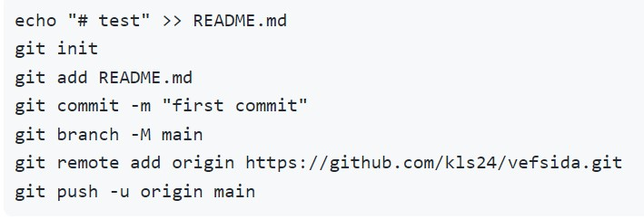
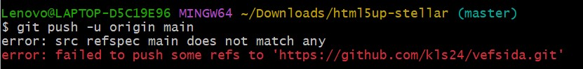
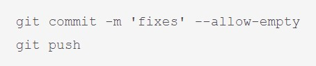
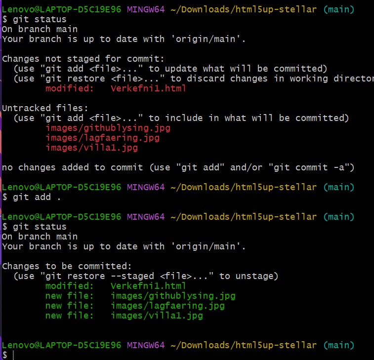
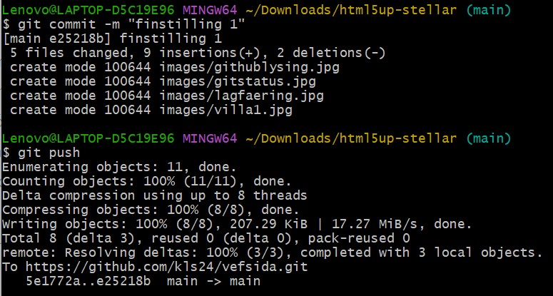

Fyrstu skref
Við upphaf þessa verkefnis hafði ég enga reynslu á að hanna vefsíðu eða notast við forritin sem eru notuð í þessu verkefni. Ég notaðist við þessar vefsíður til þess að hjálpa mér í gegnum verkefnið:
- w3schools.com
- YouTube
- Vefsíður annarra nemanda frá fyrri árum
Brackets
Til að byrja með skoðaði ég verkefnalýsinguna og helstu tengla sem Hafliði setti inn. Einn af þessum tenglum var safn af myndböndum sem Hafliði var búinn að brjóta niður verkefnið í stórum dráttum og lýsa því. Því var tilvalið að byrja á að skoða þau. Eftir myndband 1 downloadaði ég Brackets og valdi mér template á html5up.net. Eftir að ég var búinn að downloada template-inu þurfti ég að extract-a skjölin svo ég gæti copy-að index inn í bracket. Því næst byrjaði ég að föndra í síðunni, breytti titlum, setti inn lýsingar og setti inn nýjar myndir.
Ég var ekkert mikið í því að googla mig til um hvernig ég breytti leturstærðum eða setti inn myndir heldur lagði ég bara tvo og tvo saman með þekkingu minni úr öðrum forritum og fikraði mig einfaldlega áfram.
GIT
En hérna flæktust hlutirnir örlítið. Ég kannaðist ekkert við GIT eða GitHub við upphaf verkefnisins og geri það takmarkað enn í dag.
Til að byrja með fór ég inn á heimasíðu GitHub og bjó til aðgang þar, án þess að vita hvað ég væri að gera. En eins og svo oft áður reddaði Hafliði mér með myndböndunum sínum á YouTube (sjá ofar í texta link) og leiddi mig í gegnum uppsetningu á GIT ævintýrinu. Þar komst ég að því að ég þurfti að downloada GIT svo ég gæti farið að birta síðuna mína á veraldarvefnum.
Því næst ræsti ég GIT Bash og fylgdi leiðbeiningunum sem stóðu á GitHub um hvað ég ætti að stimpla inn.
Á vegferð minni að stimpla inn þessar skipanir lenti ég ítrekað í því að fá þessa villumeldingu hér að neðan:
Ég fékk aðstoð frá félaga mínum Birki Erni um að kíkja á vefsíðuna sem Sæmundur hafði gert á síðasta ári, þar sem hann lenti í sama vandamáli og ég
Þá stimplaði ég inn eftirfarandi skipanir og breytti "Source" úr "none" í "main" í Settings í GitHub.
Að lokum fylgdi ég myndbandi 4 og refreshaði GitHub. Eftir örlitla leit af linknum af vefsíðunni minni þá fann ég hann, gat skoðað vefsíðuna mína í gegnum annað tæki og sent öðrum hann með mikilli ánægju.
Við snyrtingu á verkefni 1 flipanum eftir að hafa náð að publisha síðuna þurfti að uppfæra hana í GIT. Eftir að hafa breytt örlitlu í skjalinu notaðist ég við "git status" skipun svo ég gæti séð stöðuna á vefsíðunni. Eins og sést hér á myndinni fyrir neðan eru nöfn á skjölum og myndum rauðmerkt sem þýddi að það var ekki búið að uppfæra þau í GIT. Svo ég gæti uppfært hana þurfti ég að setja skipunina "git ." svo allt myndi uppfærast eins og sést hér að neðan þá breyttist liturinn úr rauðum í grænan við þessa skipun.
Til þess að klára fínstillinguna var endurtekið sömu skref og í byrjun á git, þ.e.a.s. "git commit -m "finstilling 1" þar sem -m stendur fyrir message og "finstilling 1" er heitið á þeirri útgáfu. Því næst var "git push" og þá var verkefnið uppfært inn á GitHub og tibúið til notkunar.
